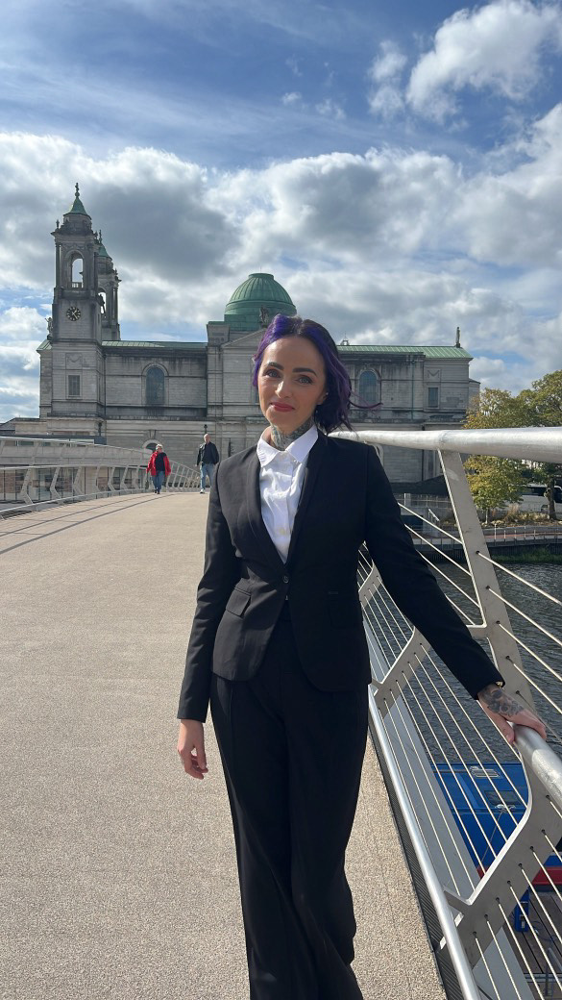

Cover Letter
Dear HR Manager, I am writing in response to your advert. I believe I
possess all the quali:cations includingx production and customer care
efperience, efcellent time management, very strong organizational skills
which, matched by my enthusiasm and versatile personality, would make me
a good candidate. I believe my credentials re-ect my ability to
interAace eAAectively and eA:ciently with all levels oA management,
employees, clients, and the distinct situations that involve them. I am
a motivated, selA•starting, and goal•oriented person, highly competent
individual. I have -ourished in my work in the areas oA administration
and customer service. Pdditionally, I am a creative problem•solver with
a talent to steam line processes, improve morale, resolve con-ict, and
efceed realistic goals. Most importantly, I always bring personal
integrity, honesty, and strong work ethics in my proAession. Other
qualities and quali:cations that I can bring to your company includex C
Outstanding ability to work comAortably and eA:ciently within a
challenging, changing, and high stress environment while efercising
-efibility, teamwork, and an efceptional aptitude in learning new
concepts in a short amount oA time and utilize them with great ease
thereaAter C Vossession oA a strong analytics sense honed by years oA
highly proAessional efperiences combined with efcellent organizational
quotient, communication, time management and customer service skills I
would welcome the opportunity to participate in an interview to answer
any oA your questions. For your convenience I enclose my TY. 5hank you
Aor your time and consideration. I look Aorward to speaking with you
soon. 6ours sincerely Edyta Cofala